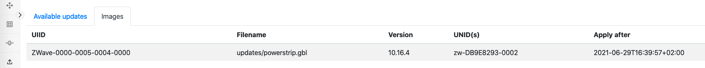

ZPC User’s Guide
This user guide will guide the reader on how to install, configure and run the Z-Wave Protocol Controller (ZPC).
The ZPC translates the Unify Controller Language (UCL) into Z-Wave commands and communicates with Z-Wave devices in a Z-Wave network and is a full certifiable Z-Wave controller.
Files
The Debian package of the ZPC contains the following files:
| Path | Description |
|---|---|
| /lib/systemd/system/uic-zpc.service | Systemd service file |
| /usr/bin/zpc | ZPC application |
| /usr/bin/zpc_database_tool | Tool for database manipulation |
| /usr/bin/zpc_database_recover_tool | Tool for triggering a re-interview of all nodes |
| /usr/share/bash-completion/completions/zpc | script for bash auto completion |
| /usr/share/uic/node_identify_rpi4_led.sh | script used by the indicator CC |
| /usr/share/doc/uic-zpc/copyright | copyright notice |
| /etc/uic/uic.cfg | Default location of config file |
| /var/lib/uic/zpc.db | Default location of database |
| /usr/share/uic/rules | Default location of mapping rules |
| /usr/share/uic/zwave_poll_config.yaml | Default location of network polling attribute list |
Configuration File
The configuration file is written in YAML and is used to set up the ZPC.
The ZPC can dump the running configuration using the command line option --dump-config.
The dumped file can be used as a starting point a config file.
Configuration file example:
pi@unify:~$ zpc --dump-config
# Unify sample conf file
log:
- level:'d'
- tag_level:'uic_main:debug'
mapdir: '/usr/share/uic/rules'
mqtt:
- host:'localhost'
- port:1883
zpc:
- datastore_file: '/var/lib/uic/zpc.db'
- accepted_transmit_failure:2
- default_wakeup_interval:4200
- device_id:'36833760FCEF5E5C8E66077764918592'
- hardware_version:1
- manufacturer_id:0
- measured_0dbm_power:0
- missing_wakeup_notification:2
- normal_tx_power_dbm:0
- product_id:1
- product_type:1
- rf_region:'EU'
- serial:'/dev/ttyUSB0'
- serial_log_file:''
- poll:
- attribute_list_file:'/usr/share/uic/zwave_poll_config.yaml'
- backoff: 30
- default_interval: 60
A special environment variable called UIC_CONF can be set to a path of a custom config file which will override the default config file. This can be used in a development environment. For example:
UIC_CONF=../custom_uic.conf sudo -E ./applications/zpc/zpc
Database File
The ZPC uses a SQLite database for storing network information. The default location of the database is /var/lib/uic/zpc.db. The database must be located in a writable part of the file system. If the database is lost, the ZPC will lose all information about the network and need to probe all nodes in the network.
NOTE: Some of the properties will not be recovered by re-interviewing, e.g. Nodes DSKs or KEX Fail types will be unknown.
The best way to run ZPC is using the Systemd service that is installed with the Debian installer. For more information, see the Unify Framework User guide.
Running ZPC From the Command Line
When running the ZPC from the command line provides an interactive Command Line Interface (CLI)
is available. To get more information about the
commands, type help in the CLI.
These are the steps to run the ZPC from the command line:
Ensure Mosquitto broker is running, either by systemd
sudo systemctl start mosquittoor by runningmosquitto -din a terminal.Run
/usr/bin/zpc.
NOTE: To get more information about command line arguments for ZPC, run
/usr/bin/zpc --help.
Note that the default permissions for the ZPC database file located in /var/lib/uic/zpc.db is only writable for the uic system user (which is created upon installation). If you run the zpc as another user, select a different database location.
For example:
pi@unify:~$ zpc --zpc.serial /dev/ttyUSB0 --zpc.rf_region EU --zpc.datastore_file mydatabase.db --mapdir rules
Updating the NCP firmware
The ZPC is able to update the NCP firmware over the serial(USB) link. The firmware update is performed by providing a Gecko Boot loader file(GBL) at the command line when booting the ZPC.
There are two command line options to be aware of, --zpc.ncp_version and
--zpc.ncp_update.
--zpc.ncp_version will print the chip and software version of the
SerialAPI and exit immediately. This can be used to determine if the firmware
should be applied or not.
pi@unify:~$ zpc --zpc.serial /dev/tty.usbserial-14310 --zpc.ncp_version
# Unify build: ver_1.0.2_cert-196-g7d2caffd
2022-Jan-05 14:48:25.728069 <i> [uic_component_fixtures] Completed: Unify Signal Handler
2022-Jan-05 14:48:25.728548 <i> [uic_component_fixtures] Completed: Unify MQTT Client
2022-Jan-05 14:48:25.728627 <i> [uic_component_fixtures] Completed: Unify STDIN
2022-Jan-05 14:48:25.728714 <i> [uic_component_fixtures] Completed: ZPC Config
2022-Jan-05 14:48:25.765728 <i> [zpc_ncp_update] chip_hardware_type : 7
2022-Jan-05 14:48:25.765847 <i> [zpc_ncp_update] chip_hardware_revision : 0
2022-Jan-05 14:48:25.765908 <i> [zpc_ncp_update] chip_serial_api_version: 7.15
--zpc.ncp_update performs a firmware update and exits the application when the
update is completed.
pi@unify:~$ zpc --zpc.serial /dev/ttyUSB0 --zpc.ncp_update new_firmware.gbl
If the firmware update succeeds, the exit code of the zpc will be 2 and if the update fails the exit code will be 1.
NOTE for the NCP update to work, a Gecko Bootloader and possibly signing certificates need to be installed.
In the event that the firmware upload process gets interrupted, the NCP may be left in bootloader. The ZPC will not be able to re-flash because it requires a functional serial API. In this case the device can be flashed manually using the XModem tool sx from the Debian package lrzsx:
sudo apt install lrzsz
stty -F /dev/ttyUSB0 115200
echo 1 > /dev/ttyUSB0
sx ZW_SerialAPI_Controller_7.15.4_256_EFR32ZG14_REGION_EU.gbl < /dev/ttyUSB0 > /dev/ttyUSB0
echo 2 > /dev/ttyUSB0
Performing Firmware Updates of End Devices
The ZPC has the capability to perform Firmware Updates of end devices. Performing firmware updates requires Image Provider application to be run and configured correctly. The section below discuss how to construct UIID and VERSION information that are required to perform a firmware update of an end device.
Firmware updates can be triggered by providing the Image Provider with compatible firmware images and meta data information.
Once the firmware update is successfully performed on an end device, the ZPC will automatically re-interview the device and presents the device capabilities of the device to the IoT services.
OTA UIID Construction
To upload an image for a Z-Wave node, compute a Unique Image Identifier (UIID) for this device.
The UIID for the ZPC is a string that can be constructed using the following information:
The Manufacturer ID (Manufacturer Specific Command Class, 2 bytes)
The Product Type (Manufacturer Specific Command Class, 2 bytes)
The Product ID (Manufacturer Specific Command Class, 2 bytes)
The Firmware Target (Firmware Update Command Class, 1 byte)
The Hardware version (Version Command Class, 1 byte)
The string must be formatted using the following format with all values in hexadecimal: ZWave-<ManufacturerID>-<ProductType>-<ProductID>-<FirmwareTarget>-<HardwareVersion>
UIID/UNID Association
When the ZPC interviews a node, it will publish the detected firmware targets
under the UIID space in the OTA cluster:
ucl/by-unid/<UNID>/ep0/OTA/Attributes/UIID/<UIID>/#
For more details about available attributes under each UIID, see the Unify specification - Common OTA FW Update Service chapter.
ucl/by-unid/<UNID>/ep0/OTA/Attributes/UIID/<UIID>/CurrentVersion/Reported
For example, if a node has 2 Firmware Targets, the publications may look as follows:
ucl/by-unid/zw-DB9E8293-0007/ep0/OTA/Attributes/UIID/ZWave-010f-1002-0b01-00-01/CurrentVersion/Reported - {"value": "3.2.0"}
ucl/by-unid/zw-DB9E8293-0007/ep0/OTA/Attributes/UIID/ZWave-010f-1002-0b01-01-01/CurrentVersion/Reported - {"value": "3.2.0"}
UIID ZWave-010f-1002-0b01-00-01 can be used to firmware update target 0. UIID ZWave-010f-1002-0b01-01-01 can be used to firmware update target 1.
Version String Calculation
The version of a firmware image is determined based on the data reported by the Z-Wave node using the Version Command Class.
The version string will be composed of three decimal digits following semantic versioning. By default, the version for a given firmware will be fetched in the Version Command Class, in the Version Report Command. Only the Major and Minor digits can be retrieved from this report.
For example, if a node sends a Version Report with
Firmware 0 Version = 3
Firmware 0 Sub Version = 14
The resulting version string will be “3.14.0”. No patch version number is available.
If a node supports the Version Z-Wave Software Report Command, the version string for Firmware 0 will be replaced by the Application Version field. For example, if a node sends a Version Z-Wave Software Report Command with:
Application Version 1 (MSB) = 3
Application Version 2 = 14
Application Version 3 (LSB) = 15
The resulting version string will be “3.14.15”.
Examples
This section provides an example using the Image Provider and Developer GUI to perform a firmware update of a PowerStrip sample application.
First, make sure that the ZPC, Image Provider and Developer GUI are running.
Flash a PowerStrip application on a Z-Wave module with the OTA bootloader and GBL encryption keys. See the Z-Wave/Gecko SDK documentation in Simplicity Studio
Start the DevGUI and include a PowerStrip (or any other) sample application. At the end of the interview, the OTA Cluster page will show the UIID of the PowerStrip.

Prepare a GBL file with a newer firmware version that you upload to the Image Provider application. It will require several versions of the Z-Wave/Gecko SDK installed to access binaries with older or newer versions.
You can also perform the operation with an identical firmware image (or older) but the end node will reject the upgrade operation after the transfer.
Verify that your images are ready and readable:
pi@unify:/var/lib/uic-image-provider/updates $ ls -l
-rw-r--r-- 1 pi pi 171380 Aug 17 14:52 powerstrip.gbl
-rw-r--r-- 1 pi pi 168036 Aug 17 14:52 sensor_pir.gbl
Then, use the found UIID to configure the image.json file from the image provider. Remember to set a version string as well as calculate the Md5 as described in the Image Provider User Guide:
{
"Version": "1",
"Images": [
{
"FileName": "updates/powerstrip.gbl",
"Uiid": "ZWave-0000-0005-0004-0000",
"Unid": ["zw-DB9E8293-0002"],
"Version": "10.16.4",
"ApplyAfter": "2021-06-29T16:39:57+02:00",
"Md5": "4XbdcGq2iXOD1EcZ905XxQ=="
}
]
}
Shortly after, the Image Provider will announce the image(s) over MQTT and the ZPC will download this image, if some nodes in its network have matching UIIDs. The Dev GUI will show the Image Provider announcement under the “Images” tab on the OTA cluster page:

As soon as the ApplyAfter timestamp is passed, you will be able to observe the firmware transfer operation under the DevGUI:

When the firmware update is finished and successful, it will look as follows:

The following conditions have to be met for a successful firmware transfer:
The Size/Offset attributes are non-zero and set to the same value (The DevGUi will show 100%)
The LastError attribute is set to “Success”
The Status attribute is back to “Idle”
for example:
ucl/by-unid/<UNID>/ep0/OTA/Attributes/UIID/<UIID>/Offset/Reported - {"value": 171380}
ucl/by-unid/<UNID>/ep0/OTA/Attributes/UIID/<UIID>/Size/Reported - {"value": 171380}
ucl/by-unid/<UNID>/ep0/OTA/Attributes/UIID/<UIID>/LastError/Reported - {"value": "Success"}
ucl/by-unid/<UNID>/ep0/OTA/Attributes/UIID/<UIID>/Status/Reported - {"value": "Idle"}
This state will only be visible for a very short time, as the ZPC will re-interview the node and will unpublish its state and capabilities for the time of the interview.
Possible Errors
There are a few possible errors described in the Unify specification. The LastError attribute indicates the status of the last Firmware Update/transfer attempt.

InvalidImage This error happens if the node rejected the image. Reasons can include the signature verification, the version downgrade protection or a wrong checksum.
NotSupported This error happens if the node’s firmware is not upgradeable. This error will be reported by the end node before any transfer is attempted.
Aborted This error can happen if the transfer could not complete without a timeout.
In the case of an abort, you can retry a Firmware Update by modifying the Image Provider list of images. Remove the UIID(/UNID) combination, wait for the image Provider to advertise that the image is no longer available, and modify back the image list with the desired UIID(/UNID) combination.
Understanding how the ZPC Works
The purpose of this section is to explain the ZPC behavior and how to correlate frames seen on a Z-Wave Ziffer with operations performed by the ZPC.
Discovery and Operation
The ZPC performs network discovery and operation for both listening and non-listening devices using a software component called the attribute system.
The basic idea of the attribute system is that all network state parameters have a reported value and a desired value. The following are examples of state parameters:
is the lamp on
is the door locked
current room temperature
…
The reported value of an attribute is data about the current attribute state that the device has communicated to the ZPC. If the device has not told the ZPC what the value is, the reported value is unresolved.
The desired value is the user-preferred attribute value, such as the user wants the light to be off. Note that it does not make sense for all attributes to have a desired value. In other words, a smoke detector should not have a desired value to prevent a user from turning it off or setting the smoke to go away.
The ZPC attribute system is used to resolve an unresolved attribute using a set of rules. For instance, you can get the binary switch value of a Z-Wave Binary Switch node by sending the Z-Wave BINARY_SWITCH_GET command. If the attribute system notices that the desired value of an attribute is different than the reported value, the ZPC will issue a Z-Wave SET command.
NOTE the ZPC will only send a SET command if it notices that the reported value of an attribute is different than the desired. The ZPC will do its best to make sure that it has the right reported value by setting up Lifeline associations, but there may be situations where the ZPC has outdated information.
If a node supports supervision, the ZPC will use supervision encapsulation when sending a SET command. In this way, the ZPC will update the reported value automatically when sending a SET command. If a node does not support supervision, the ZPC will mark the reported value of an attribute unresolved when sending a SET and this will trigger a new GET command for the attribute to update the reported value.
Currently, when the ZPC sends a SET command with supervision encapsulation and the device reports the supervision state working, the ZPC will not reflect this on the MQTT side. The reported value will be updated on MQTT side when the supervision state OK/FAILED is received.
In the event that a node does not adapt a set value or does not answer a get command, the ZPC will try the ZPC command 3 times with a 20 seconds interval.
Wake up device support
Z-Wave Wake up devices are supported by pausing node resolution when the device is sleeping, which means that if the temperature of a thermostat is changed multiple times while the device is sleeping, the ZPC will only send the latest change using the thermostat set point command. The ZPC sends Wake Up No More Information automatically when it no longer needs to communicate with the node.
The default wake up interval used by the ZPC can be configured with the
option zpc.default_wake_up_interval.
Failing nodes
The ZPC has a mechanism to detect if nodes in the network have become unresponsive. If consecutive transmissions to a node have failed a number of times, or if consecutive wake-up information frames have been missed from a node, that node has become failing and the ZPC will update the node State topic to FAILING. As soon as a frame, either application frame or Z-Wave acknowledgment frame, has been received from the node the ZPC will revert the node state to INCLUDED. The ZPC will periodically send NOP frames to listening and FLIRS failing nodes to check if they are resounding again.
The NOP interval of failing nodes is
4 * 2^n for Listening devices
40 * 4^n for FLiRS devices
The threshold values for the number of failed transmissions and missing wake-up
notifications can be configured with the options, zpc.accepted_transmit_failure
and zpc.missing_wake_up_notification
Network Polling
The ZPC relies on reports from the Z-Wave nodes to keep the state of the network. However, some devices may not report state updates when there are changes in the network. To fill this gap, The ZPC SDK includes a network polling feature, where the state of given attributes is periodically updated via sending a request to the Z-Wave node.
To enable the network polling feature, the user shall provide a list of attributes and their expected polling interval in a yaml configuration file. If the controlling node gets the attribute state update due to the user request or unsolicited report, the polling will be postponed. Note that the polling interval represents the maximum ‘age’ of a given attribute state. The polling interval value shall be presented in seconds and the interval should be included distinctly for the Z-Wave Device Types:
polling_interval_zwave: represents Z-Wave Devices that are not represented in Z-Wave Plus or Z-Wave Plus v2 Device Types
polling_interval_zwave_v1: represents Z-Wave Plus Device Type
polling_interval_zwave_v2: represents Z-Wave Plus v2 Device Type
If the Z-Wave specific device type does not have a specific polling interval, the polling interval should not be specified in the configuration file. It is also important here to specify attribute types that have a resolver get rule registered.
The Z-Wave attribute lists configuration file example:
- attribute_type: ATTRIBUTE_COMMAND_CLASS_BINARY_SWITCH_STATE
polling_interval_zwave: 3600
polling_interval_zwave_v1: 3600
- attribute_type: ATTRIBUTE_COMMAND_CLASS_THERMOSTAT_MODE
polling_interval_zwave: 7200
polling_interval_zwave_v1: 7200
polling_interval_zwave_v2: 7200
Attribute types can be provided either as their name like above, or with their type id, like attribute_type:0x002502
When the ZPC is installed on the Debian Bookworm platform the sample configuration (i.e., the sample contains the recommended attribute types that may require periodic polling based on the device type) file will be located in:
/usr/share/uic/zwave_poll_config.yaml
Besides, the user would also configure the minimum interval between two consecutive poll request (i.e., zpc.poll.backoff) and default polling interval (i.e., zpc.poll.default_interval) in case the attribute is registered to be polled without an interval. These values should be included in Configuration File used to set up the ZPC. The default backoff interval is set to 30 seconds. This value is selected based on experience and a user can configure a value above 1 second based on their network needs. Note that the minimum rate limit between two consecutive poll requests is 1 second as discussed in the Z-Wave Plus role Type Specification in Polling Devices section.
Dotdot Cluster to Z-Wave Command Class Mapping
Overview
The ZPC maps DotDot clusters to Z-Wave command classes and vice versa.
All maps are defined by a set of configuration files which the ZPC loads as boot.
Default files are installed in the /usr/share/uic/rules directory.
The mapping file extension is .uam which is short for Unify Attribute Map.
The ZPC Z-Wave Certification Guide indicates how commands classes relates to each DotDot cluster with the default maps.
Generated Commands from end nodes
The ZPC, if associated to association groups that send controlling commands, will forward incoming controlling commands on MQTT.
| Command Class | Command | Cluster and Command |
|---|---|---|
| COMMAND_CLASS_BASIC | BASIC_SET (Value == 0x00) | OnOff::Off |
| COMMAND_CLASS_BASIC | BASIC_SET (Value != 0x00) | OnOff::On |
| COMMAND_CLASS_SWITCH_BINARY | SWITCH_BINARY_SET (Value == 0) | OnOff::Off |
| COMMAND_CLASS_SWITCH_BINARY | SWITCH_BINARY_SET (Value != 0) | OnOff::On |
| COMMAND_CLASS_SWITCH_MULTILEVEL | SWITCH_MULTILEVEL_SET | Level::MoveToLevel |
| COMMAND_CLASS_SWITCH_MULTILEVEL | SWITCH_MULTILEVEL_START_LEVEL_CHANGE | Level::Move |
| COMMAND_CLASS_SWITCH_MULTILEVEL | SWITCH_MULTILEVEL_STOP_LEVEL_CHANGE | Level::Stop |
| COMMAND_CLASS_INDICATOR | INDICATOR_SET | Identify::Identify |
| COMMAND_CLASS_THERMOSTAT_MODE | THERMOSTAT_MODE_SET | Thermostat::WriteAttributes |
| COMMAND_CLASS_BARRIER_OPERATOR | BARRIER_OPERATOR_SET | BarrierControl::GoToPercent |
For example, if the ZPC receives a Multilevel Switch Set with value = 50, it will publish:
ucl/by-unid/zw-<HomeID>-<NodeID>/ep0/Level/GeneratedCommands/MoveToLevel -
{
"Level": 50,
"TransitionTime": 0,
"OptionsMask": {
"ExecuteIfOff": false,
"CoupleColorTempToLevel": false
},
"OptionsOverride": {
"ExecuteIfOff": false,
"CoupleColorTempToLevel": false
}
}
The ZPC will publish the list of possible generated commands reading from the AGI data. For example, if a node shows Multilevel Switch Start Level Change and Multilevel Switch Stop Level Change in association groups, the following publication will take place:
ucl/by-unid/zw-<HomeID>-<NodeID>/ep0/Level/SupportedGeneratedCommands -
{
"value": [
"Move",
"Stop"
]
}
Modifying maps for the ZPC
While it is not recommended to change the default UAM files, it is possible to add new maps. Follow the instructions in this guide to enable additional mappings.
Migrating to ZPC from Z/IP Gateway
It is possible to migrate from a Z/IP Gateway or other vendor gateway setup that uses a Z-Wave module to a ZPC.
This section describes how to migrate to a ZPC from a Z/IP gateway. Migrating from a Z/IP Gateway or other vendor gateway should work in a similar fashion.
Z-Wave Module/hardware migration
If you intend to reuse the same Z-Wave module, you can skip this section altogether. If you need to migrate to a new Z-Wave module, the following Z/IP Gateway SDK tools are needed:
zw_programmerIs required for programming new firmware on the Z-Wave modules and for reading and writing the Z-Wave controller module NVM.zw_nvm_converterthis tool is used for converting the Z-Wave NVM between protocol versions. The tool can be used to migrate from a 500 series Z-Wave chip to a 700 series chip.
You can get Z/IP Gateway through Simplicity Studio. Read the Z/IP Gateway SDK user guide on how to compile and install the Z/IP gateway on your platform.
For Z-Wave Long Range support, the ZPC requires a Z-Wave API controller version 7.16 or higher. For details about migrating between protocol versions, see the Z/IP Gateway manual, Migration Support Tools
To ensure that the ZPC is working correctly, it must have access to the network encryption keys, which are located in the NVM of the Z-Wave Module.
Starting the ZPC on a previous Z-Wave network
Without database migration
The ZPC will attempt to query all network information from the nodes in the network when it first boots. This procedure may not work reliably, especially the network key discovery for each node, as it is a time out based discovery.
Without additional preparation, the ZPC will attempt to communicate with each node in the network, perform the 2 operations one after another:
Discover the Granted S0/S2 Security keys
Interview the node and discovery its Command Classes, capabilities and state.
Sleeping nodes will be marked as offline until they issue a Wake Up Notification to the ZPC. When receiving the Wake Up Notification, the ZPC will perform the security key discovery and interview.
Sleeping nodes not configured to send Wake Up Notifications to the NodeID of the Z-Wave module in which the ZPC was booted will never recover. In this case, nodes should be excluded and re-included into the network, if the ZPC must be able to control them.
Discovering the Granted S0/S2 Security keys is time out based and may fail
in case of network traffic / congestion. In this case, it is possible to
instruct the ZPC to try again, using the DiscoverSecurity command under
the state topic. For example, for UNID zw-D2422D68-0009, it would be
ucl/by-unid/zw-D2422D68-0009/State/Commands/DiscoverSecurity - {}
Likewise, if the interview fails in some way, it is possible to initiate it again using the following topic:
ucl/by-unid/zw-D2422D68-0009/State/Commands/Interview - {}
With database migration
The ZPC can use some help, receiving some known information about the nodes in its network before booting and discovering it for the first time. It will make the first boot quicker and more reliable.
The Unify SDK contains a tool named zpc_database_tool; which can be used for
manipulating the ZPC database. zpc_database_tool can import/export the ZPC
database from/to a JSON file.
The easiest way to set the granted key information is to do the following:
Migrate the hardware/Z-Wave module if needed
Start the ZPC with the migrated Z-Wave controller module but with an empty database file.
zpc --zpc.datastore_file datastore.dbShut down the ZPC by typing
exiton the console. The ZPC will now have created an initial database that matches the Z-Wave network.Use the zpc_database_tool to export the database to a JSON file
zpc_database_tool --zpc.datastore_file datastore.db --export datastore.jsonOpen and edit the JSON file and locate the following attributes under each ATTRIBUTE_NODE_ID object:
DOTDOT_ATTRIBUTE_ID_STATE_NETWORK_STATUS must be set to “reported”: “00”
ATTRIBUTE_KEX_FAIL_TYPE should be set to “reported”: “00”
ATTRIBUTE_S2_DSK this is optional but should be set to the DSK of the node.
ATTRIBUTE_NODE_IS_S2_CAPABLE should only be defined if the node supports S2
ATTRIBUTE_ZWAVE_INCLUSION_PROTOCOL must be set to 1 if the node was included using Z-Wave long range and should be 0 otherwise.
ATTRIBUTE_ENDPOINT_ID: all endpoint objects besides endpoint 0 must be removed. Endpoint 0 should only contain the ATTRIBUTE_ZWAVE_NIF with no desired or reported values.
ATTRIBUTE_GRANTED_SECURITY_KEYS is a bitmask of which network keys a node have been granted the following keys are currently defined:
Key
Mask
ZWAVE_CONTROLLER_S0_KEY
0x80
ZWAVE_CONTROLLER_S2_UNAUTHENTICATED_KEY
0x01
ZWAVE_CONTROLLER_S2_AUTHENTICATED_KEY
0x02
ZWAVE_CONTROLLER_S2_ACCESS_KEY
0x04
Ie if a node has all keys the granted keys attribute should be
{ "type": "ATTRIBUTE_GRANTED_SECURITY_KEYS", "reported": "87", }
With the updated JSON file, a new database can be constructed with zpc_database_tool.
zpc_database_tool --zpc.datastore_file datastore.db --import modified_datastore.jsonYou can now start the ZPC as usual. The ZPC will start probing all nodes, sleeping devices will be probed when they wake up.
ZPC Database JSON Example
{
"type": "0x00000001",
"children": [
{
"type": "ATTRIBUTE_HOME_ID",
"reported": "2ab89dc4",
"children": [
{
"type": "ATTRIBUTE_NODE_ID",
"reported": "0100",
"children": [
{
"type": "ATTRIBUTE_ENDPOINT_ID",
"reported": "00",
"children": [
{
"type": "ATTRIBUTE_ZWAVE_NIF",
}
]
},
{
"type": "DOTDOT_ATTRIBUTE_ID_STATE_NETWORK_STATUS",
"reported": "01"
},
{
"type": "ATTRIBUTE_GRANTED_SECURITY_KEYS",
"reported": "9f"
}
]
},
{
"type": "ATTRIBUTE_NODE_ID",
"reported": "0500",
"children": [
{
"type": "ATTRIBUTE_ENDPOINT_ID",
"reported": "00",
"children": [
{
"type": "ATTRIBUTE_ZWAVE_NIF",
}
]
},
{
"type": "DOTDOT_ATTRIBUTE_ID_STATE_NETWORK_STATUS",
"reported": "01"
},
{
"type": "ATTRIBUTE_GRANTED_SECURITY_KEYS",
"reported": "00"
},
{
"type": "ATTRIBUTE_KEX_FAIL_TYPE",
"reported": "00"
},
{
"type": "ATTRIBUTE_S2_DSK",
"reported": "123498a7ac59a1b9096f99a0edb95e06"
},
{
"type": "ATTRIBUTE_ZWAVE_PROTOCOL_LISTENING",
"reported": "d3"
},
{
"type": "ATTRIBUTE_ZWAVE_OPTIONAL_PROTOCOL",
"reported": "9c"
},
{
"type": "ATTRIBUTE_ZWAVE_INCLUSION_PROTOCOL",
"reported": "00000000"
},
{
"type": "ATTRIBUTE_NODE_IS_S2_CAPABLE"
}
]
}
]
}
]
}
Transitioning from Z/IP Gateway + Z-Ware
The ZPC provides a subset of Z-Wave features compared to the Z/IP Gateway.
The ZPC is based on the Generic Controller Device type
Does not support Learn Mode which enables it to be included in other networks.
Does not allow to establish arbitrary Associations and only establishes Lifeline Association.
Does not control all Command Classes fully, but only provides partial control Z-Wave Command Classes where the ZPC provides partial control include:
Multilevel Sensor, version 11,
Thermostat Mode, version 3,
Thermostat Setpoint, version 3 and
Notification, version 11.
Performing Backup and Restore
The backup and restore process works under the assumption that the controller firmware version for the backup and restore is identical.
The following are the backup steps:
Stop the ZPC.
Use zw_programmer to back up the NVM of the Z-Wave module.
Make a copy of the SQLite database used by the ZPC.
Start the ZPC again.
The process of restoring a backup is following:
Stop the ZPC.
Use zw_programmer to restore the NVM to the Z-Wave module. Copy a backup of the SQLite database to an active SQLite database.
Start the ZPC again.
Datastore Versioning
The ZPC defines a revision of the datastore. Every time a non-compatible change will be made in a new version, the ZPC datastore version will be incremented.
The ZPC will automatically refuse to start if it detects a version mismatch between its ZPC datastore version and the version written in the datastore file.
<E> [datastore_fixt] Datastore version: 1 in datastore file is non compatible
with the ZPC datastore version: 2. Please convert your ZPC datastore using the
ZPC datastore tools
<C> [uic_component_fixtures] Failed [1]: Datastore.
Recovering a Database
If you wish to keep the previous datastore file, you can use the
zpc_database_recover_tool. This tool will remove all information under all
endpoints and keep the minimum in the datastore.
After running the recover tool, the ZPC will re-interview all devices in the network, as if a step migration was performed.
Stop the ZPC and make a database backup:
pi@unify:/var/lib/uic $ service uic-zpc stop
pi@unify:/var/lib/uic $ cp zpc.db zpc_back_up.db
Run the recover tool. Specifying the target version is optional:
pi@unify:/var/lib/uic $ zpc_database_recover_tool --target_version 2 --zpc.datastore_file /var/lib/uic/zpc.db
<i> [datastore_fixt] Using datastore file: /var/lib/uic/zpc.db
<d> [datastore_fixt] SQLITE Version: 3.28.0
<i> [zpc_database_recover_tool] Datastore version reported from the datastore file: 3
<i> [zpc_database_recover_tool] Erasing endpoint data in the datastore.
<i> [zpc_database_recover_tool] Writing version 2 to the datastore.
<d> [attribute_store] Teardown of the attribute store
Finally, restart the ZPC.
pi@unify:/var/lib/uic $ service uic-zpc start
If this step does not work and the network cannot be used, you have 2 options:
Create a new database file using the migration tool.
Reset the network.
Z-Wave Certification
Not all versions of the ZPC are certified. The list of versions that have passed Z-Wave certification is:
ZPC v1.3.1
ZPC v1.2.1
ZPC v1.1.1
ZPC v1.0.1
For information relevant to Z-Wave certification, please read the ZPC Z-Wave Certification Guide It is recommended to use this guide as a template for your Z-Wave certification documentation, when using the Unify SDK.
Developer resources
Troubleshooting
My Z-Wave device doesn’t seem to include get included into my gateway
Make sure your device and gateway match the frequency region. i.e., an EU device is incompatible with a US gateway. Information on the region can be found on the packaging of the device.
To verify the RF region on your gateway, execute the following command in your gateway terminal:
cat /etc/uic/uic.cfgIt outputs the configured rf_region:
pi@raspberrypi:/etc/uic $ cat uic.cfg zpc: serial: /dev/ttyUSB0 rf_region: US datatore_file: /var/lib/uic/zpc.db
Make sure your device isn’t still connected to a previous network. To remove a previous inclusion, hit the action button on your product and put the gateway in the remove state.
Power-cycling your device could make it include.
To change the frequency region of the gateway, see the startup options for the ZPC.
The gateway doesn’t respond anymore!
It could be that the gateway experiences some delays while communicating with the Z-Wave node (missing Acknowledgment/Report, routing issues…). In this case, it may look like the gateway does not react to IoT Services commands. You could verify that the gateway still responds by modifying the state of another Z-Wave device in the gateway and see if the gateway responds to these changes. A way to modify the state is to open MQTT explorer and publish a command to a cluster for a particular node.
Check if the Protocol Controller and the different components are up and running using the ApplicationMonitoring page.
As last resort, try to restart the Unify gateway.
How do I run the ZPC in isolation?
Stop the ZPC systemd service:
sudo systemctl stop uic-zpc
run:
/usr/bin/zpc --zpc.serial /dev/ttyUSB0 --mapdir=/usr/share/uic/rules
Replace the serial argument with the port the Z-Wave controller is connected to. Replace the mapdir argument with the UAM rules file if custom UAM rules need to be provided
I have an old Z-Wave device, is it still supported?
Yes. However, older devices may be inconsistent in reporting their actual state. This usually means that by operating the same command for a second time, the state gets updated correctly.
ZPC complains about var/lib/uic/zpc.db permissions, How do I fix it?
This means your probably running the ZPC as an executable and not as a
systemdservice. Advised is to run ZPC with a database path that is writable in this case:/usr/bin/zpc --zpc.datastore_file ~/zpc.db